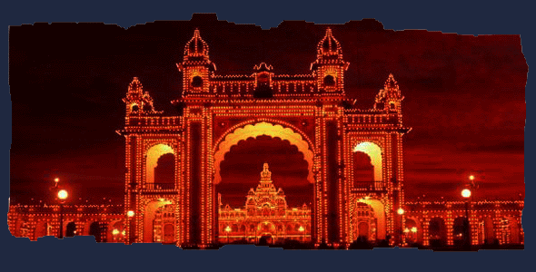
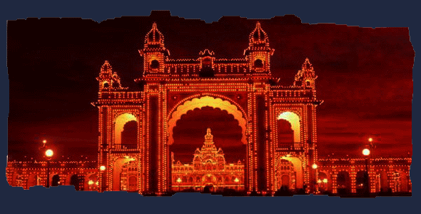

Package of the trip starts...
Random places to visit here(Agra,Rameshwaram,Darjeeling,Ladakh,Madurai temple,Lalbagh,Mysoreplace,camel Safarri)999only



Package of the trip starts...
Random places to visit here(Agra,Rameshwaram,Darjeeling,Ladakh,Madurai temple,Lalbagh,Mysoreplace,camel Safarri)999only

Ladakh is a region administered by India as a union territory, and constitutes a part of the larger Kashmir region, which has been the subject of dispute between India, Pakistan, and China since 1947. Ladakh is bordered by the Tibet Autonomous Region to the east, the Indian state of Himachal Pradesh to the south, both the Indian-administered union territory of Jammu and Kashmir and the Pakistan-administered Gilgit-Baltistan to the west, and the southwest corner of Xinjiang across the Karakoram Pass in the far north. It extends from the Siachen Glacier in the Karakoram range to the north to the main Great Himalayas to the south. The eastern end, consisting of the uninhabited Aksai Chin plains, is claimed by the Indian Government as part of Ladakh, and has been under Chinese control since 1962
The Taj Mahal (/ˌtɑːdʒ məˈhɑːl, ˌtɑːʒ-/;[4] lit. 'Crown of the Palace', [taːdʒ ˈmɛːɦ(ə)l]),[5] is an ivory-white marble mausoleum on the right bank of the river Yamuna in the Indian city of Agra. It was commissioned in 1632 by the Mughal emperor Shah Jahan (r. 1628–1658) to house the tomb of his favourite wife, Mumtaz Mahal; it also houses the tomb of Shah Jahan himself. The tomb is the centrepiece of a 17-hectare (42-acre) complex, which includes a mosque and a guest house, and is set in formal gardens bounded on three sides by a crenellated wall.
Darjeeling (Bengal Nepali: [darˈd͡ziliŋ]) is a city and a municipality in the Indian state of West Bengal. It is located in the Lesser Himalayas at an elevation of 2,000 metres (6,560 ft). It is noted for its tea industry, its views of the world's third-highest mountain Kangchenjunga, and the Darjeeling Himalayan Railway, a UNESCO World Heritage Site. Darjeeling is the headquarters of the Darjeeling district which has a partially autonomous status called Gorkhaland Territorial Administration within the state of West Bengal. It is also a popular tourist destination in India.
Rameswaram (IPA: [ɾaːmeːsʋaɾam]; also transliterated as Ramesvaram, Rameshwaram) is a municipality in the Ramanathapuram district of the Indian state of Tamil Nadu. It is on Pamban Island separated from mainland India by the Pamban channel and is about 40 kilometres from Mannar Island, Sri Lanka. It is in the Gulf of Mannar, at the tip of the Indian peninsula. Pamban Island, also known as Rameswaram Island, is connected to mainland India by the Pamban Bridge. Rameswaram is the terminus of the railway line from Chennai and Madurai. Together with Varanasi, it is considered to be one of the holiest places in India to Hindus, and part of the Char Dham pilgrimage.
Madurai is a major city in the Indian state of Tamil Nadu. It is the cultural capital of Tamil Nadu and the administrative headquarters of Madurai District. As of the 2011 census, it was the third largest Urban agglomeration in Tamil Nadu after Chennai and Coimbatore and the 44th most populated city in India.[9] Located on the banks of River Vaigai, Madurai has been a major settlement for two millennia. It is often referred to as "Thoonga Nagaram", meaning "the city which never sleeps
Lalbagh Fort (also Fort Aurangabad) is an incomplete 17th-century Mughal fort complex that stands before the Buriganga River in the southwestern part of Dhaka, Bangladesh. The construction was started in 1678 AD by Mughal Subahdar Muhammad Azam Shah, who was a son of Emperor Aurangzeb and later emperor himself. His successor, Shaista Khan, did not continue the work, though he stayed in Dhaka up to 1688.
Mysore is situated at the foothills of Chamundi Hills about 145.2 km (90 mi) towards the southwest of Bangalore and spread across an area of 155 km2 (60 sq mi). Mysore City Corporation is responsible for the civic administration of the city, which is also the headquarters of Mysore district and Mysore division. It served as the capital city of the Kingdom of Mysore for nearly six centuries from 1399 until 1956. The Kingdom was ruled by the Wadiyar dynasty, with a brief period of interregnum in the late 18th century when Hyder Ali and Tipu Sultan were in power.
Camel Safari is a 2013 Indian Malayalam-language romance film directed by Jayaraj which narrates a love story set in Rajasthan. The movie features Arun Shankar and Pankaja Menon in the lead roles. Sekhar Menon, Tini Tom, Sabitha Jayaraj, Binu Adimaly, Neha Ramesh, Hashim Hussain, Vishnu Mohan and Anjali Ajayan plays supporting roles; Kamal Gaur, the villain of Johnnie Walker, made a comeback. The filming of Camel Safari begun on 22 November 2012 at the Pushkar Fair in Rajasthan.[2] It was completed in three schedules with the maximum being shot in Rajasthan (Jodhpur, Jaisalmer, Bikaner and Pushkar) and the rest in Cochin, Kerala